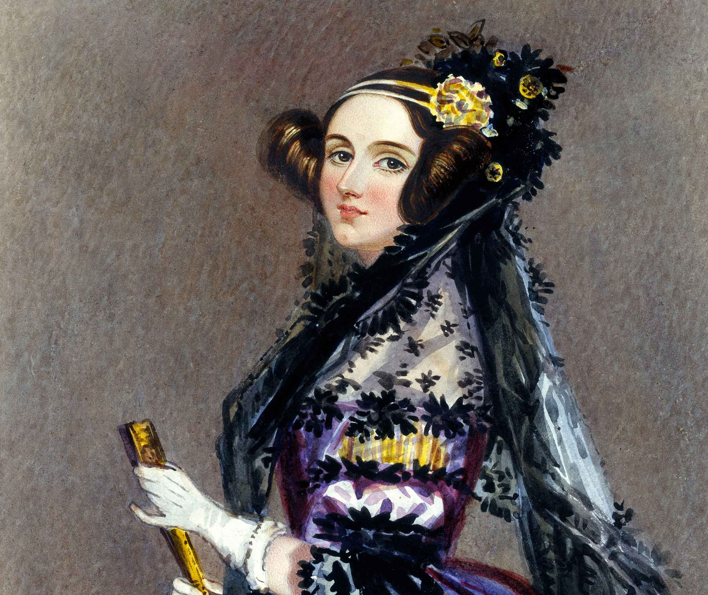
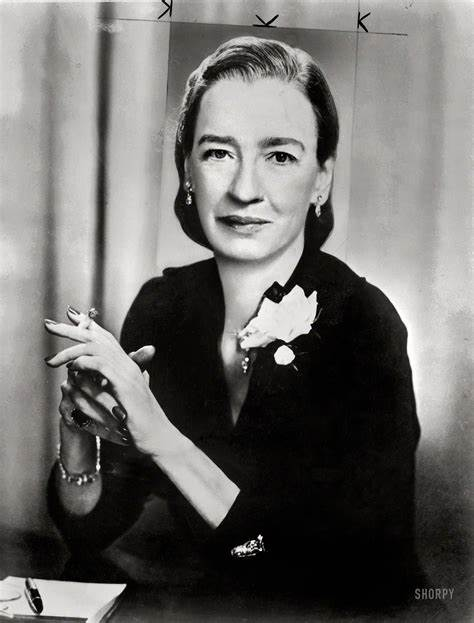

Ada Lovelace é considerada a primeira programadora da história. Ela trabalhou com o matemático Charles Babbage no século XIX e foi responsável por escrever o primeiro algoritmo a ser executado em uma máquina, a Máquina Analítica. Lovelace percebeu o potencial das máquinas para além dos cálculos matemáticos e imaginou a possibilidade de criar software.
"A máquina pode fazer qualquer coisa que possa ser descrita de forma algébrica." (Ada Lovelace)
Alan Turing é um dos pais da ciência da computação moderna. Durante a Segunda Guerra Mundial, ele liderou a equipe que decifrou o código alemão "Enigma", contribuindo significativamente para a vitória dos Aliados. Turing também desenvolveu o conceito de uma máquina universal de computação, conhecida como a Máquina de Turing, que estabeleceu os fundamentos teóricos dos computadores modernos.
"Nós só podemos ver uma curta distância adiante, mas podemos ver muito claramente que há muito a ser feito." (Alan Turing)
Grace Hopper foi uma pioneira na programação de computadores e uma das primeiras programadoras do Harvard Mark I, um dos primeiros computadores eletromecânicos. Ela desenvolveu o primeiro compilador, um programa que traduz código de programação para linguagem de máquina, tornando a programação mais acessível. Hopper também introduziu a ideia de linguagens de programação de alto nível, como o COBOL.
"O mais perigoso dos clichês é dizer que as coisas sempre foram feitas de determinada maneira." (Grace Hopper)